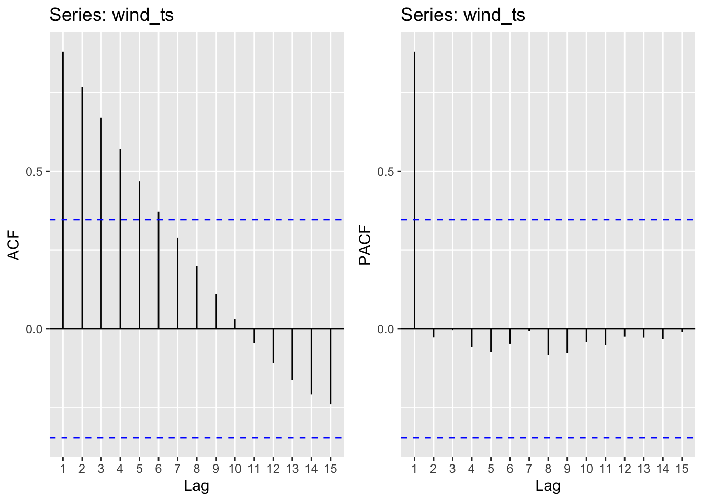
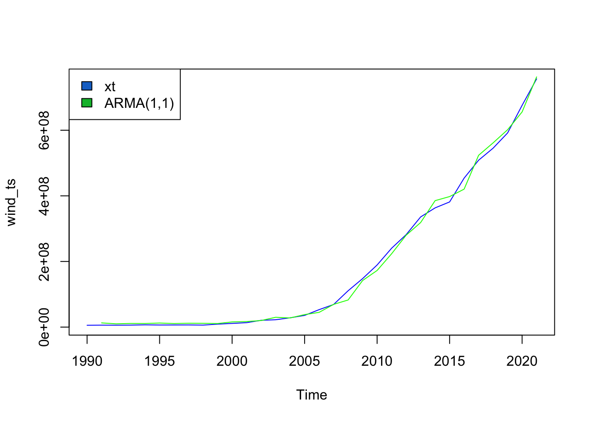
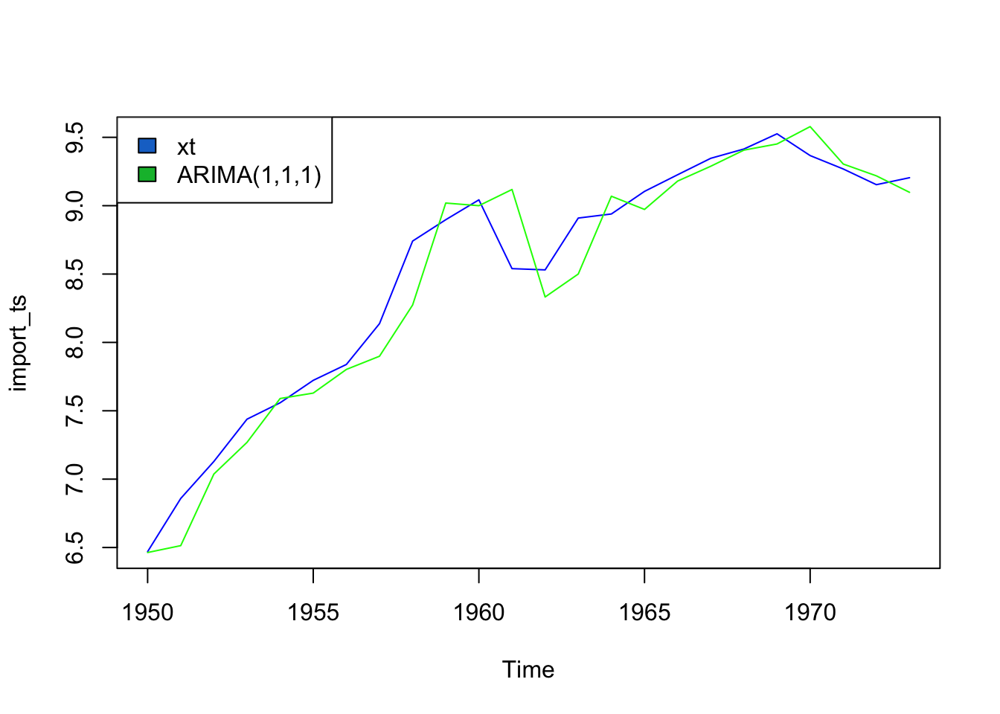

ARMA/ARIMA/SARIMA Models

Dataset 1 - Electricity Production
1) Data Review
From EDA, we looked at ACF graphs and checked ADF to see if the data was stationary. The data was not stationary so we’ll take the log to try to make it at least weakly stationary.
Log Transform energy production outputs - and plot
Check if data is now stationary using ACF plot
It’s now weakly stationary! No further differencing necessary.
2) ACF/PACF Plots
ACF/PACF plots are used to select potential p and q values for an ARMA(p,q) model. ARMA is used because no differencing of the data occurred. From these plots, some potential p and q values are selected to fit an ARMA model with. Separate models have to be fit for each energy source, thus separate ACF/PACF plots are shown below.
Coal
Moving average order (found from ACF): q - 1,2,3,4
Autoregressive term (found from pACF): p - 1
Nuclear
Moving average order (found from ACF): q - 1,2,3,4,5
Autoregressive term (found from pACF): p - 1
Wind

Moving average order (found from ACF): q - 1,2,3,4,5
Autoregressive term (found from pACF): p - 1
Solar
Moving average order (found from ACF): q - 1,2,3
Autoregressive term (found from pACF): p - 1
3) Fit ARIMA(p,d,q) models
Coal
| p | q | AIC |
|---|---|---|
| 1 | 1 | 1319.547 |
| 1 | 2 | 1325.199 |
| 1 | 3 | 1312.109 |
| 1 | 4 | 1313.924 |
Nuclear
| p | q | AIC |
|---|---|---|
| 1 | 1 | 1213.296 |
| 1 | 2 | 1212.388 |
| 1 | 3 | 1214.309 |
| 1 | 4 | 1225.694 |
| 1 | 5 | 1229.118 |
Wind
| p | q | AIC |
|---|---|---|
| 1 | 1 | 1144.565 |
| 1 | 2 | 1147.529 |
| 1 | 3 | 1148.876 |
| 1 | 4 | 1147.240 |
| 1 | 5 | 1150.403 |
Solar
| p | q | AIC |
|---|---|---|
| 1 | 1 | 1069.721 |
| 1 | 2 | 1063.944 |
| 1 | 3 | 1073.950 |
4) Model Diagnostics
With the above exploration, a best fit model is chosen for each energy source by minimizing AIC.
Coal
The ARMA(p,q) model that minimizes AIC is ARMA(1,3).
Call:
arma(x = coal_ts, order = c(1, 3))
Model:
ARMA(1,3)
Residuals:
Min 1Q Median 3Q Max
-467564239 -111368527 52069246 112738236 326924565
Coefficient(s):
Estimate Std. Error t value Pr(>|t|)
ar1 1.074e+00 9.793e-03 109.664 <2e-16 ***
ma1 -3.294e-01 2.462e-01 -1.338 0.1810
ma2 -3.552e-02 6.203e-01 -0.057 0.9543
ma3 5.782e-01 2.625e-01 2.203 0.0276 *
intercept -2.978e+08 1.120e+04 -26602.741 <2e-16 ***
---
Signif. codes: 0 '***' 0.001 '**' 0.01 '*' 0.05 '.' 0.1 ' ' 1
Fit:
sigma^2 estimated as 2.75e+16, Conditional Sum-of-Squares = 7.701038e+17, AIC = 1312.11ARMA(1,3) for coal produces an AIC value of 1312.11 and a CSS value of 7.7x10^17. Using the model summary and plot of the model against the data above, it seems that the model fits the data pretty well but not perfectly. The randomness and sensitivity of the original data makes it hard for the model to truly fit well without overfitting. To achieve a better fit would require overfitting the training data and wouldn’t generalize well to new data.
\[ \phi(B) = 1 - 1.07(B) \] \[ \theta(B) = 1 + 3.29*10^-1 *(B) + 3.552*10^-2*(B^2) - 5.782*10^-1*(B^3) \]
Nuclear
The ARMA(p,q) model that minimizes AIC is ARMA(1,2).
Call:
arma(x = nuclear_ts, order = c(1, 2))
Model:
ARMA(1,2)
Residuals:
Min 1Q Median 3Q Max
-114143177 -26807890 5091034 22515762 52763712
Coefficient(s):
Estimate Std. Error t value Pr(>|t|)
ar1 8.976e-01 3.176e-03 282.600 <2e-16 ***
ma1 5.650e-02 1.914e-01 0.295 0.7678
ma2 -3.256e-01 1.744e-01 -1.868 0.0618 .
intercept 1.657e+08 7.670e+03 21598.292 <2e-16 ***
---
Signif. codes: 0 '***' 0.001 '**' 0.01 '*' 0.05 '.' 0.1 ' ' 1
Fit:
sigma^2 estimated as 1.298e+15, Conditional Sum-of-Squares = 3.764894e+16, AIC = 1212.39ARMA(1,2) for nuclear produces an AIC value of 1212.39 and a CSS value of 3.76x10^16. It seems that the model fits the data pretty well but not perfectly. To achieve a better fit would require overfitting the training data and wouldn’t generalize well to new data.
\[ \phi(B) = 1 - 8.976*10^-1(B) \] \[ \theta(B) = 1 - 5.65*10^-2 *(B) + 3.256*10^-1*(B^2) \]
Wind
The ARMA(p,q) model that minimizes AIC is ARMA(1,1).

Call:
arma(x = wind_ts, order = c(1, 1))
Model:
ARMA(1,1)
Residuals:
Min 1Q Median 3Q Max
-22040549 -6078188 -4049714 3768737 33558013
Coefficient(s):
Estimate Std. Error t value Pr(>|t|)
ar1 1.105e+00 1.202e-02 91.912 <2e-16 ***
ma1 4.621e-01 1.890e-01 2.444 0.0145 *
intercept 6.648e+06 3.527e+04 188.479 <2e-16 ***
---
Signif. codes: 0 '***' 0.001 '**' 0.01 '*' 0.05 '.' 0.1 ' ' 1
Fit:
sigma^2 estimated as 1.659e+14, Conditional Sum-of-Squares = 4.976633e+15, AIC = 1144.57ARMA(1,1) for wind produces an AIC value of 1144.57 and a CSS value of 4.97x10^15. The model fits this data much better than the previous data as it follows a steadier upward trend over time as wind production has been more widely adopted by US states. Additionally, wind power is less prone to political shocks so is easier to predict and fit.
\[ \phi(B) = 1 - 1.05(B) \] \[ \theta(B) = 1 + 4.62*10^-1 *(B) \]
Solar
The ARMA(p,q) model that minimizes AIC is ARMA(1,2).
Call:
arma(x = solar_ts, order = c(1, 2))
Model:
ARMA(1,2)
Residuals:
Min 1Q Median 3Q Max
-8923843 -53422 331446 1505395 10832340
Coefficient(s):
Estimate Std. Error t value Pr(>|t|)
ar1 1.268e+00 1.864e-02 68.028 < 2e-16 ***
ma1 1.018e+00 1.741e-01 5.849 4.96e-09 ***
ma2 -2.671e-01 2.142e-01 -1.247 0.212
intercept -5.627e+05 NaN NaN NaN
---
Signif. codes: 0 '***' 0.001 '**' 0.01 '*' 0.05 '.' 0.1 ' ' 1
Fit:
sigma^2 estimated as 1.255e+13, Conditional Sum-of-Squares = 3.82509e+14, AIC = 1063.94Simiarly, ARMA(1,2) for solar produces an AIC value of 1,063.94 and a CSS value of 3.82x10^9. The model fits this data much better than the previous data as it follows a steadier upward trend over time as solar production has been more widely adopted by US states. Additionally, solar power is less prone to political shocks so is easier to predict and fit.
\[ \phi(B) = 1 - 1.268(B) \] \[ \theta(B) = 1 - 1.018(B) + 2.671*10^-1*(B^2) \]
5) Fit an ARMA(p,q) model using auto.arima()
Coal
Series: coal_ts
ARIMA(2,2,2)
Coefficients:
ar1 ar2 ma1 ma2
-0.2910 -0.8112 -0.7750 0.8498
s.e. 0.1896 0.1227 0.2165 0.3065
sigma^2 = 2.109e+16: log likelihood = -606.73
AIC=1223.45 AICc=1225.95 BIC=1230.46Auto.arima() chooses AR(2,2) as the best model, very different from my chosen model of AR(1,3). This is likely because auto.arima() considers a more comprehensive set of parameters (i.e. I didn’t check p=2 as a possible value) and I chose my model based on AIC alone whereas auto.arima() chooses models based on AIC, BIC, and AICc.
Nuclear
Series: nuclear_ts
ARIMA(0,1,0) with drift
Coefficients:
drift
12988794
s.e. 7504730
sigma^2 = 1.79e+15: log likelihood = -587.85
AIC=1179.71 AICc=1180.13 BIC=1182.57The model chosen here is (0,1,0) which is bizarre. This only applies differencing, but doesn’t use AutoRegressive modeling or Moving Average modeling. This is likely because the data is hard to fit.
Wind
Series: wind_ts
ARIMA(0,2,1)
Coefficients:
ma1
-0.4339
s.e. 0.1699
sigma^2 = 2.172e+14: log likelihood = -537.34
AIC=1078.68 AICc=1079.13 BIC=1081.49The model chosen is ARIMA(0,2,1), which is essentially an MA() model with differencing. The search algorithm decided to difference twice, where I didn’t because I already saw weak stationarity in initial exploration.
Solar
Series: solar_ts
ARIMA(0,2,1)
Coefficients:
ma1
0.8289
s.e. 0.1120
sigma^2 = 2.766e+13: log likelihood = -506.9
AIC=1017.81 AICc=1018.25 BIC=1020.61The model chosen is ARIMA(0,2,1), which is essentially an MA() model with differencing. The search algorithm decided to difference twice, where I didn’t because I already saw weak stationarity in initial exploration.
6) Forecast
Forecast each energy source for the next three years - using manually selected models, but including 2 orders of differencing for each.
Coal
Forecasting coal production three years into the future, it’s expected to continue declining along the lines of its current downward trend. There’s quite a large confidence band around this estimate, as many other factors will affect coal production - such as the geopolitical climate surrounding coal.
Nuclear
Forecasting nuclear production three years into the future, it’s expected to stay fairly steady along the 1.5x10^9 tons line. There’s quite a large confidence band around this estimate, as many other factors will affect wind production - especially political sentiment around its usage.
Wind
Forecasting wind production three years into the future, it’s expected to continually exponentially growing as per its existing trend. There’s a much smaller confidence band around this esimate, as its seen a steady increase over this timeframe. Infrastructure improvements in the space will affect the estimate greatly.
Solar
Forecasting solar production three years into the future, it’s expected to continually exponentially growing as per its existing trend. There’s a much smaller confidence band around this esimate, as its seen a steady increase over this timeframe. Infrastructure improvements in the space will affect the estimate greatly.
7) Benchmark Methods
Compare the models to baseline benchmark methods to ensure they’re performing above.
Coal
Nuclear
Wind
Solar
Note: Across all four energy sources, the fitted model does perform better than benchmark methods.
Dataset 2 - Petroleum Exports vs. Imports
1) Data Review
From EDA, we looked at ACF graphs and checked ADF to see if the data was stationary. The data was not stationary so we take the log and difference to make it stationary.
Log Transform petroleum imports, exports, and production - and plot
Since the data is still not stationary, exports, imports, and production will be differenced.
Imports
Augmented Dickey-Fuller Test
data: import_ts %>% diff()
Dickey-Fuller = -3.7192, Lag order = 2, p-value = 0.04149
alternative hypothesis: stationaryExports
Must be differenced twice. A first difference results in a p-value of 0.32 by the ADF test: indicating that we can’t reject the null hypothesis of no stationarity. Stationarity is only achieved with a second difference.
Augmented Dickey-Fuller Test
data: export_ts %>% diff() %>% diff()
Dickey-Fuller = -4.5144, Lag order = 2, p-value = 0.01
alternative hypothesis: stationaryProduction Must be differenced twice. A first difference results in a p-value of 0.99 by the ADF test: indicating that we can’t reject the null hypothesis of no stationarity. Stationarity is only achieved with a second difference.
Augmented Dickey-Fuller Test
data: production_ts %>% diff() %>% diff()
Dickey-Fuller = -4.0549, Lag order = 2, p-value = 0.02134
alternative hypothesis: stationaryAll three variables were differenced once or twice in order to achieve stationarity. The stationary property of the data is confirmed by the ACF plots of each, as well as the Augmented-Dickey-Fuller Test of the differenced series.
2) ACF/PACF Plots
ACF/PACF plots are used to select potential p and q values for an ARIMA(p,d,q) model. From these plots, some potential p and q values are selected to fit an ARIMA model with. Separate models have to be fit for each variable thus separate ACF/PACF plots are shown below.
Import
Moving average order (found from ACF): q - 1,2,3
Autoregressive term (found from pACF): p - 1
Exports
Moving average order (found from ACF): q - 1,2,3
Autoregressive term (found from pACF): p - 1
Production
Moving average order (found from ACF): q - 1
Autoregressive term (found from pACF): p - 1
3) Fit ARIMA(p,d,q) models
Imports
| p | d | q | AIC | BIC | AICc |
|---|---|---|---|---|---|
| 1 | 1 | 1 | 1.764891 | 5.171374 | 3.028049 |
| 1 | 2 | 1 | 1.782784 | 5.055911 | 3.116117 |
| 1 | 3 | 1 | 10.774584 | 13.908151 | 12.186349 |
| 1 | 1 | 2 | 3.519834 | 8.061811 | 5.742056 |
| 1 | 2 | 2 | 3.708435 | 8.072605 | 6.061376 |
| 1 | 3 | 2 | 7.919693 | 12.097783 | 10.419693 |
| 1 | 1 | 3 | 3.394707 | 9.072178 | 6.924119 |
| 1 | 2 | 3 | 5.588815 | 11.044027 | 9.338815 |
| 1 | 3 | 3 | 8.751611 | 13.974223 | 12.751611 |
Exports
| p | d | q | AIC | BIC | AICc |
|---|---|---|---|---|---|
| 1 | 1 | 1 | 10.408080 | 13.81456 | 11.67124 |
| 1 | 2 | 1 | 11.644777 | 14.91790 | 12.97811 |
| 1 | 3 | 1 | 19.463857 | 22.59742 | 20.87562 |
| 1 | 1 | 2 | 9.090324 | 13.63230 | 11.31255 |
| 1 | 2 | 2 | 12.512548 | 16.87672 | 14.86549 |
| 1 | 3 | 2 | 21.466731 | 25.64482 | 23.96673 |
| 1 | 1 | 3 | 11.089958 | 16.76743 | 14.61937 |
| 1 | 2 | 3 | 11.108577 | 16.56379 | 14.85858 |
| 1 | 3 | 3 | 18.917698 | 24.14031 | 22.91770 |
Production
| p | d | q | AIC | BIC | AICc |
|---|---|---|---|---|---|
| 1 | 1 | 0 | -42.47036 | -40.19937 | -41.87036 |
| 1 | 2 | 0 | -40.83047 | -38.64838 | -40.19889 |
| 1 | 3 | 0 | -29.22643 | -27.13739 | -28.55977 |
| 1 | 1 | 1 | -40.55816 | -37.15168 | -39.29500 |
| 1 | 2 | 1 | -38.89113 | -35.61800 | -37.55780 |
| 1 | 3 | 1 | -33.56462 | -30.43105 | -32.15285 |
| 2 | 1 | 0 | -40.56932 | -37.16284 | -39.30617 |
| 2 | 2 | 0 | -38.93721 | -35.66408 | -37.60387 |
| 2 | 3 | 0 | -28.70668 | -25.57311 | -27.29491 |
| 2 | 1 | 1 | -38.76965 | -34.22767 | -36.54743 |
| 2 | 2 | 1 | -37.03220 | -32.66803 | -34.67926 |
| 2 | 3 | 1 | -32.16038 | -27.98229 | -29.66038 |
4) Model Diagnostics
With the above exploration, a best fit model for each variable is chosen by minimizing AIC, AICc, and BIC
Imports
The ARIMA model that minimizes AIC and AICc is ARIMA(1,1,1)

Call:
arima(x = import_ts, order = c(1, 1, 1))
Coefficients:
ar1 ma1
0.5586 -0.1272
s.e. 0.4354 0.5220
sigma^2 estimated as 0.04819: log likelihood = 2.12, aic = 1.76
Training set error measures:
ME RMSE MAE MPE MAPE MASE
Training set 0.05626467 0.2149074 0.1541133 0.7196743 1.833747 0.7871504
ACF1
Training set -0.0981568With this model, we get a training RMSE of 0.215, so the model fits the training data fairly well without overfitting due to its bizarre behavior.
\[ \phi(B) = 1 - 0.5586(B) \] \[ \theta(B) = 1 - 0.4354(B) \]
Exports
The consensus across AIC, BIC, and AICc is that the best fit model is ARIMA(1,1,2).
Call:
arima(x = export_ts, order = c(1, 1, 2))
Coefficients:
ar1 ma1 ma2
-0.8486 1.7381 0.9117
s.e. 0.1701 0.3518 0.3438
sigma^2 estimated as 0.05395: log likelihood = -0.55, aic = 9.09
Training set error measures:
ME RMSE MAE MPE MAPE MASE
Training set 0.07329069 0.2273772 0.1747664 0.9874671 2.719147 0.7576492
ACF1
Training set -0.0979957\[ \phi(B) = 1 + 0.8486(B) \] \[ \theta(B) = 1 - 1.7101(B) - 0.9117(B^2) \] With this model, we get a training RMSE of 0.2273. As evidenced by the plot, the model does a pretty terrible job with this model fit - likely due to the complex adn random nature of the data. Let’s see what auto.arima() would have chosen for this model.
Production
The consensus across AIC, BIC, and AICc is that the best fit model is ARIMA(1,1,0).
Call:
arima(x = production_ts, order = c(1, 1, 0))
Coefficients:
ar1
0.8427
s.e. 0.1421
sigma^2 estimated as 0.007357: log likelihood = 23.24, aic = -42.47
Training set error measures:
ME RMSE MAE MPE MAPE MASE
Training set 0.01526092 0.08398331 0.06473024 0.1645849 0.705565 0.7023005
ACF1
Training set 0.008829977\[ \phi(B) = 1 - 0.8427(B) \]
With this model, we get a training RMSE of 0.08398331, so the model fits the training data fairly well without overfitting due to its bizarre behavior.
5) Fit an ARIMA(p,d,q) model using auto.arima()
Imports
Series: import_ts
ARIMA(0,1,0) with drift
Coefficients:
drift
0.1189
s.e. 0.0450
sigma^2 = 0.04869: log likelihood = 2.63
AIC=-1.26 AICc=-0.66 BIC=1.01The model chosen is ARIMA(0,1,0) with drift. While auto.arima() agrees with my choice of differencing, it chose different parameters for p and q, and experimented with drift whereas I did not.
Exports
Series: export_ts
ARIMA(0,1,1) with drift
Coefficients:
ma1 drift
0.4822 0.1498
s.e. 0.1514 0.0766
sigma^2 = 0.06913: log likelihood = -1
AIC=7.99 AICc=9.26 BIC=11.4The model chosen is ARIMA(0,1,1) with drift. This is slightly different than my choice, likely because auto.arima() experimented with a wider range of parameters and experimented with drift.
Production
Series: production_ts
ARIMA(2,0,0) with non-zero mean
Coefficients:
ar1 ar2 mean
1.7223 -0.8478 9.1494
s.e. 0.1344 0.1229 0.1388
sigma^2 = 0.007907: log likelihood = 23.34
AIC=-38.69 AICc=-36.58 BIC=-33.98The model chosen is ARIMA(2,0,0) with non-zero mean - or an AR(2) model. AR is more suitable when the data has a clear pattern of autoregression and less randomness. This potentially makes sense given the lack of seasonality and large overall upward trend in production since 1970.
6) Forecast
Forecasting petroleum imports, exports, and production for the next three years.
All three forecasts have a wide confidence band - indicating that based on past data alone we cannot generate a good estimate with high confidence. Imports are expected to increase slightly in the next 3 years, but have mostly stabilized. Exports are expected to increase for a year and then plateau/decrease for the next two years. Production is expected to continue exponentially increasing during the next three years.
7) Benchmark
The models perform better than most of the models, expect the drift model. It’s clear that the models would benefit from incorporating a drift term to account for the intense drift especially production and exports suffer from.
Dataset 3 - Cost of Energy
1) Data Review
From EDA, we looked at ACF graphs and checked ADF to see if the data was stationary. The data was not stationary so we take the log and difference to make it stationary.
Log Transform - and plot
Taking the log of the data barely changed it! We’ll have to difference it. According to the ADF test, the data requires 2 differences. We can experiment with this during model building.
Augmented Dickey-Fuller Test
data: cost_ts %>% diff()
Dickey-Fuller = -2.6121, Lag order = 3, p-value = 0.3332
alternative hypothesis: stationary2) ACF/PACF Plots
ACF/PACF plots are used to select potential p and q values for an ARIMA(p,d,q) model. From these plots, some potential p and q values are selected to fit an ARIMA model with. Separate models have to be fit for each variable thus separate ACF/PACF plots are shown below.
Import
Moving average order (found from ACF): q - 1,2,3,4,5
Autoregressive term (found from pACF): p - 0,1
3) Fit ARIMA(p,d,q) models
| p | d | q | AIC | BIC | AICc |
|---|---|---|---|---|---|
| 0 | 2 | 1 | -39.93109 | -36.60397 | -39.59776 |
| 0 | 3 | 1 | -17.18553 | -13.91036 | -16.84267 |
| 0 | 2 | 2 | -38.52660 | -33.53591 | -37.84088 |
| 0 | 3 | 2 | -29.18752 | -24.27477 | -28.48164 |
| 0 | 2 | 3 | -36.60530 | -29.95105 | -35.42883 |
| 0 | 3 | 3 | -27.35465 | -20.80430 | -26.14253 |
| 0 | 2 | 4 | -37.89350 | -29.57569 | -36.07532 |
| 0 | 3 | 4 | -26.43893 | -18.25100 | -24.56393 |
| 0 | 2 | 5 | -36.23746 | -26.25609 | -33.61246 |
| 0 | 3 | 5 | -26.28811 | -16.46259 | -23.57843 |
| 1 | 2 | 1 | -38.52145 | -33.53077 | -37.83574 |
| 1 | 3 | 1 | -22.09809 | -17.18533 | -21.39221 |
| 1 | 2 | 2 | -39.77465 | -33.12040 | -38.59818 |
| 1 | 3 | 2 | -27.31762 | -20.76727 | -26.10550 |
| 1 | 2 | 3 | -37.90967 | -29.59186 | -36.09149 |
| 1 | 3 | 3 | -28.53833 | -20.35040 | -26.66333 |
| 1 | 2 | 4 | -36.48416 | -26.50279 | -33.85916 |
| 1 | 3 | 4 | -27.12777 | -17.30225 | -24.41809 |
| 1 | 2 | 5 | -34.48427 | -22.83934 | -30.87137 |
| 1 | 3 | 5 | -25.13525 | -13.67215 | -21.40192 |
4) Model Diagnostics
With the above exploration, a best fit model for each variable is chosen by minimizing AIC, AICc, and BIC
The ARIMA model that minimizes AIC, BIC, and AICc is ARIMA(0,2,1)
Call:
arima(x = cost_ts, order = c(0, 2, 1))
Coefficients:
ma1
-0.8515
s.e. 0.1333
sigma^2 estimated as 0.01836: log likelihood = 21.97, aic = -39.93
Training set error measures:
ME RMSE MAE MPE MAPE MASE
Training set -0.007565158 0.1321637 0.09492191 -0.1831388 7.305725 0.9102723
ACF1
Training set 0.06219478With this model, we get a training RMSE of 0.243, so the model fits the training data fairly well without overfitting. The random bumps and dips in the data have been largely smoothed, while the trend line is maintained.
\[ \theta(B) = 1 + 0.8616(B) \]
5) Fit an ARIMA(p,d,q) model using auto.arima()
Series: cost_ts
ARIMA(0,1,0) with drift
Coefficients:
drift
0.0572
s.e. 0.0207
sigma^2 = 0.01756: log likelihood = 24.6
AIC=-45.19 AICc=-44.87 BIC=-41.81The model chosen by auto.arima() is ARIMA(0,1,0) with drift. This is similar to the model parameters that I manually chose - except that auto.arima() chose to perform a second difference of the data and didn’t see the need for a moving average term.
6) Forecast
Forecasting electricity costs for the next three years.
According to our model, electricity costs are going to continue to rise over the next three years. Though there is ia decently large confidence band around the estimate, it is predicted that the slight dip in electricity costs during the Great Recession in 2008 were short lived and the market is going to recover. Since this data is old, I can confirm that electricity costs have continued to rise since the dataset stopped collecting data and the model forecast was correct.
7) Benchmark
The model performs better than all the benchmark methods - except drift which performs about the same as the model. Again, this model could be improved by including a drift term and then should outperform even the drift benchmark.
Dataset 4 - CO2 Emissions
1) Data Review
From EDA, we looked at ACF graphs and checked ADF to see if the data was stationary. The data was not stationary so we take the log and difference to make it stationary.
Log Transform coal, natural gas, petro, and hydrocarbon gas - and plot
Taking the log of the data changed it significantly! An ADF test reveals the data is almost stationary. According to the ADF test, coal and petroleum require another differencing, while hydro and natural gas are already stationary. We can experiment with this during model building.
Augmented Dickey-Fuller Test
data: coal_ts %>% diff()
Dickey-Fuller = -17.759, Lag order = 8, p-value = 0.01
alternative hypothesis: stationary
Augmented Dickey-Fuller Test
data: hydro_ts
Dickey-Fuller = -4.6126, Lag order = 8, p-value = 0.01
alternative hypothesis: stationary
Augmented Dickey-Fuller Test
data: natural_ts
Dickey-Fuller = -5.1735, Lag order = 8, p-value = 0.01
alternative hypothesis: stationary
Augmented Dickey-Fuller Test
data: petro_ts %>% diff()
Dickey-Fuller = -14.139, Lag order = 8, p-value = 0.01
alternative hypothesis: stationary2) ACF/PACF Plots
ACF/PACF plots are used to select potential p and q values for a SARIMA(p,d,q)(P,D,Q) model. SARIMA is used because the data contains seasonal components and had differencing. From these plots, some potential p,q,P,Q values are selected to fit a SARIMA model with. Separate models have to be fit for each energy source, thus separate ACF/PACF plots are shown below.
Coal
Differencing: d = 0,1; D = 0,1
Moving average order: q = 0,1; Q = 0,1,2,3
Autoregressive terms: p = 0,1, P = 0,1
Hydrocarbon

Differencing: d = 0,1; D = 0,1
Moving average order: q = 0,1,2,3,4; Q = 0,1,2,3
Autoregressive terms: p = 0,1, P = 0,1,2
Natural Gas
Differencing: d = 0,1; D = 0,1
Moving average order (ACF): q = 0,1,2; Q = 0,1,2
Autoregressive terms (PACF): p = 0,1,2,3; P = 0,1,2,3
Petroleum
Differencing: d = 0,1; D = 0,1
Moving average order: q = 0,1; Q = 0,1
Autoregressive terms: p = 0,1,2,3,4; P = 0,1,2
3) Fit SARIMA models and Model Diagnostics
Coal
| p | d | q | P | D | Q | AIC | BIC | AICc |
|---|---|---|---|---|---|---|---|---|
| 0 | 1 | 0 | 0 | 1 | 0 | -1713.934 | -1709.559 | -1713.928 |
| 0 | 1 | 0 | 1 | 1 | 0 | -1808.766 | -1800.016 | -1808.746 |
| 0 | 1 | 0 | 0 | 1 | 1 | -1933.114 | -1924.364 | -1933.094 |
| 0 | 1 | 0 | 1 | 1 | 1 | -1934.556 | -1921.431 | -1934.515 |
| 0 | 1 | 0 | 0 | 1 | 2 | -1935.279 | -1922.154 | -1935.238 |
| 0 | 1 | 0 | 1 | 1 | 2 | -1933.530 | -1916.030 | -1933.461 |
| 0 | 1 | 1 | 0 | 1 | 0 | -1756.164 | -1747.414 | -1756.144 |
| 0 | 1 | 1 | 1 | 1 | 0 | -1840.869 | -1827.744 | -1840.828 |
| 0 | 1 | 1 | 0 | 1 | 1 | -1954.295 | -1941.170 | -1954.254 |
| 0 | 1 | 1 | 1 | 1 | 1 | -1957.260 | -1939.760 | -1957.191 |
| 0 | 1 | 1 | 0 | 1 | 2 | -1958.498 | -1940.998 | -1958.429 |
| 0 | 1 | 1 | 1 | 1 | 2 | -1956.844 | -1934.969 | -1956.741 |
| 1 | 1 | 0 | 0 | 1 | 0 | -1749.433 | -1740.683 | -1749.412 |
| 1 | 1 | 0 | 1 | 1 | 0 | -1832.690 | -1819.565 | -1832.649 |
| 1 | 1 | 0 | 0 | 1 | 1 | -1946.043 | -1932.918 | -1946.002 |
| 1 | 1 | 0 | 1 | 1 | 1 | -1949.070 | -1931.570 | -1949.001 |
| 1 | 1 | 0 | 0 | 1 | 2 | -1950.206 | -1932.706 | -1950.138 |
| 1 | 1 | 0 | 1 | 1 | 2 | -1948.466 | -1926.591 | -1948.363 |
| 1 | 1 | 1 | 0 | 1 | 0 | -1755.139 | -1742.014 | -1755.097 |
| 1 | 1 | 1 | 1 | 1 | 0 | -1862.508 | -1845.008 | -1862.440 |
| 1 | 1 | 1 | 0 | 1 | 1 | -1983.036 | -1965.536 | -1982.967 |
| 1 | 1 | 1 | 1 | 1 | 1 | -1983.376 | -1961.500 | -1983.272 |
| 1 | 1 | 1 | 0 | 1 | 2 | -1984.070 | -1962.195 | -1983.967 |
Hydrocarbon
| p | d | q | P | D | Q | AIC | BIC | AICc |
|---|---|---|---|---|---|---|---|---|
| 0 | 1 | 0 | 0 | 1 | 0 | -873.1263 | -868.7513 | -873.1194 |
| 0 | 1 | 0 | 1 | 1 | 0 | -1002.8832 | -994.1332 | -1002.8627 |
| 0 | 1 | 0 | 2 | 1 | 0 | -1111.3376 | -1098.2125 | -1111.2964 |
| 0 | 1 | 0 | 0 | 1 | 1 | -1203.8541 | -1195.1040 | -1203.8335 |
| 0 | 1 | 0 | 1 | 1 | 1 | -1201.9027 | -1188.7776 | -1201.8616 |
| 0 | 1 | 0 | 2 | 1 | 1 | -1204.4410 | -1186.9409 | -1204.3722 |
| 0 | 1 | 0 | 0 | 1 | 2 | -1201.9142 | -1188.7891 | -1201.8730 |
| 0 | 1 | 0 | 1 | 1 | 2 | -1201.4663 | -1183.9662 | -1201.3976 |
| 0 | 1 | 0 | 2 | 1 | 2 | -1203.6509 | -1181.7757 | -1203.5476 |
| 0 | 1 | 0 | 0 | 1 | 3 | -1203.5805 | -1186.0804 | -1203.5117 |
| 0 | 1 | 0 | 1 | 1 | 3 | -1202.5083 | -1180.6331 | -1202.4050 |
| 0 | 1 | 1 | 0 | 1 | 0 | -1060.3161 | -1051.5660 | -1060.2955 |
| 0 | 1 | 1 | 1 | 1 | 0 | -1186.1759 | -1173.0508 | -1186.1347 |
| 0 | 1 | 1 | 2 | 1 | 0 | -1287.0822 | -1269.5821 | -1287.0135 |
| 0 | 1 | 1 | 0 | 1 | 1 | -1347.1337 | -1334.0086 | -1347.0925 |
| 0 | 1 | 1 | 1 | 1 | 1 | -1345.9415 | -1328.4414 | -1345.8728 |
| 0 | 1 | 1 | 2 | 1 | 1 | -1346.4694 | -1324.5943 | -1346.3661 |
| 0 | 1 | 1 | 0 | 1 | 2 | -1346.0930 | -1328.5929 | -1346.0243 |
| 0 | 1 | 1 | 1 | 1 | 2 | -1346.8532 | -1324.9781 | -1346.7500 |
| 0 | 1 | 1 | 0 | 1 | 3 | -1346.6384 | -1324.7633 | -1346.5351 |
| 0 | 1 | 2 | 0 | 1 | 0 | -1061.4756 | -1048.3506 | -1061.4345 |
| 0 | 1 | 2 | 1 | 1 | 0 | -1189.6328 | -1172.1327 | -1189.5641 |
| 0 | 1 | 2 | 2 | 1 | 0 | -1295.2742 | -1273.3991 | -1295.1710 |
| 0 | 1 | 2 | 0 | 1 | 1 | -1358.8380 | -1341.3379 | -1358.7693 |
| 0 | 1 | 2 | 1 | 1 | 1 | -1357.1601 | -1335.2849 | -1357.0568 |
| 0 | 1 | 2 | 0 | 1 | 2 | -1357.2290 | -1335.3539 | -1357.1258 |
| 0 | 1 | 3 | 0 | 1 | 0 | -1061.0342 | -1043.5341 | -1060.9655 |
| 0 | 1 | 3 | 1 | 1 | 0 | -1188.4295 | -1166.5543 | -1188.3262 |
| 0 | 1 | 3 | 0 | 1 | 1 | -1357.7752 | -1335.9001 | -1357.6719 |
| 0 | 1 | 4 | 0 | 1 | 0 | -1080.6914 | -1058.8163 | -1080.5881 |
| 1 | 1 | 0 | 0 | 1 | 0 | -975.5913 | -966.8413 | -975.5708 |
| 1 | 1 | 0 | 1 | 1 | 0 | -1099.9589 | -1086.8339 | -1099.9178 |
| 1 | 1 | 0 | 2 | 1 | 0 | -1202.5387 | -1185.0386 | -1202.4699 |
| 1 | 1 | 0 | 0 | 1 | 1 | -1285.5188 | -1272.3937 | -1285.4776 |
| 1 | 1 | 0 | 1 | 1 | 1 | -1283.9443 | -1266.4442 | -1283.8755 |
| 1 | 1 | 0 | 2 | 1 | 1 | -1285.8820 | -1264.0069 | -1285.7787 |
| 1 | 1 | 0 | 0 | 1 | 2 | -1284.0408 | -1266.5407 | -1283.9721 |
| 1 | 1 | 0 | 1 | 1 | 2 | -1284.2978 | -1262.4227 | -1284.1946 |
| 1 | 1 | 0 | 0 | 1 | 3 | -1285.6719 | -1263.7968 | -1285.5687 |
| 1 | 1 | 1 | 0 | 1 | 0 | -1061.1029 | -1047.9778 | -1061.0618 |
| 1 | 1 | 1 | 1 | 1 | 0 | -1189.1817 | -1171.6816 | -1189.1130 |
| 1 | 1 | 1 | 2 | 1 | 0 | -1295.2879 | -1273.4128 | -1295.1846 |
| 1 | 1 | 1 | 0 | 1 | 1 | -1362.6442 | -1345.1441 | -1362.5755 |
| 1 | 1 | 1 | 1 | 1 | 1 | -1360.9720 | -1339.0969 | -1360.8687 |
| 1 | 1 | 1 | 0 | 1 | 2 | -1361.0473 | -1339.1722 | -1360.9440 |
| 1 | 1 | 2 | 0 | 1 | 0 | -1085.5112 | -1068.0111 | -1085.4425 |
| 1 | 1 | 2 | 1 | 1 | 0 | -1199.6741 | -1177.7990 | -1199.5708 |
| 1 | 1 | 2 | 0 | 1 | 1 | -1366.4262 | -1344.5511 | -1366.3230 |
| 1 | 1 | 3 | 0 | 1 | 0 | -1083.6212 | -1061.7461 | -1083.5179 |
Natural Gas
| p | d | q | P | D | Q | AIC | BIC | AICc |
|---|---|---|---|---|---|---|---|---|
| 0 | 1 | 0 | 0 | 1 | 0 | -1542.895 | -1538.520 | -1542.889 |
| 0 | 1 | 0 | 1 | 1 | 0 | -1658.087 | -1649.337 | -1658.066 |
| 0 | 1 | 0 | 2 | 1 | 0 | -1725.448 | -1712.323 | -1725.407 |
| 0 | 1 | 0 | 3 | 1 | 0 | -1753.627 | -1736.127 | -1753.558 |
| 0 | 1 | 0 | 0 | 1 | 1 | -1792.413 | -1783.663 | -1792.392 |
| 0 | 1 | 0 | 1 | 1 | 1 | -1792.921 | -1779.796 | -1792.880 |
| 0 | 1 | 0 | 2 | 1 | 1 | -1792.694 | -1775.194 | -1792.625 |
| 0 | 1 | 0 | 3 | 1 | 1 | -1790.751 | -1768.876 | -1790.648 |
| 0 | 1 | 0 | 0 | 1 | 2 | -1793.287 | -1780.162 | -1793.246 |
| 0 | 1 | 0 | 1 | 1 | 2 | -1792.405 | -1774.904 | -1792.336 |
| 0 | 1 | 0 | 2 | 1 | 2 | -1790.737 | -1768.861 | -1790.633 |
| 0 | 1 | 1 | 0 | 1 | 0 | -1630.824 | -1622.074 | -1630.803 |
| 0 | 1 | 1 | 1 | 1 | 0 | -1734.020 | -1720.895 | -1733.979 |
| 0 | 1 | 1 | 2 | 1 | 0 | -1785.860 | -1768.359 | -1785.791 |
| 0 | 1 | 1 | 3 | 1 | 0 | -1810.176 | -1788.301 | -1810.073 |
| 0 | 1 | 1 | 0 | 1 | 1 | -1831.400 | -1818.275 | -1831.358 |
| 0 | 1 | 1 | 1 | 1 | 1 | -1832.111 | -1814.611 | -1832.043 |
| 0 | 1 | 1 | 2 | 1 | 1 | -1831.441 | -1809.566 | -1831.337 |
| 0 | 1 | 1 | 0 | 1 | 2 | -1832.460 | -1814.960 | -1832.391 |
| 0 | 1 | 1 | 1 | 1 | 2 | -1831.015 | -1809.140 | -1830.912 |
| 0 | 1 | 2 | 0 | 1 | 0 | -1669.981 | -1656.855 | -1669.939 |
| 0 | 1 | 2 | 1 | 1 | 0 | -1772.096 | -1754.595 | -1772.027 |
| 0 | 1 | 2 | 2 | 1 | 0 | -1830.306 | -1808.431 | -1830.203 |
| 0 | 1 | 2 | 0 | 1 | 1 | -1870.805 | -1853.305 | -1870.736 |
| 0 | 1 | 2 | 1 | 1 | 1 | -1872.027 | -1850.152 | -1871.924 |
| 0 | 1 | 2 | 0 | 1 | 2 | -1872.589 | -1850.714 | -1872.486 |
| 1 | 1 | 0 | 0 | 1 | 0 | -1582.644 | -1573.894 | -1582.623 |
| 1 | 1 | 0 | 1 | 1 | 0 | -1697.097 | -1683.972 | -1697.056 |
| 1 | 1 | 0 | 2 | 1 | 0 | -1756.762 | -1739.262 | -1756.693 |
| 1 | 1 | 0 | 3 | 1 | 0 | -1783.229 | -1761.354 | -1783.126 |
| 1 | 1 | 0 | 0 | 1 | 1 | -1814.581 | -1801.456 | -1814.540 |
| 1 | 1 | 0 | 1 | 1 | 1 | -1814.929 | -1797.428 | -1814.860 |
| 1 | 1 | 0 | 2 | 1 | 1 | -1814.363 | -1792.487 | -1814.259 |
| 1 | 1 | 0 | 0 | 1 | 2 | -1815.239 | -1797.739 | -1815.170 |
| 1 | 1 | 0 | 1 | 1 | 2 | -1814.007 | -1792.132 | -1813.904 |
| 1 | 1 | 1 | 0 | 1 | 0 | -1691.456 | -1678.331 | -1691.415 |
| 1 | 1 | 1 | 1 | 1 | 0 | -1787.334 | -1769.834 | -1787.265 |
| 1 | 1 | 1 | 2 | 1 | 0 | -1844.790 | -1822.915 | -1844.687 |
| 1 | 1 | 1 | 0 | 1 | 1 | -1892.790 | -1875.290 | -1892.721 |
| 1 | 1 | 1 | 1 | 1 | 1 | -1894.348 | -1872.473 | -1894.244 |
| 1 | 1 | 1 | 0 | 1 | 2 | -1894.850 | -1872.975 | -1894.747 |
| 1 | 1 | 2 | 0 | 1 | 0 | -1690.210 | -1672.710 | -1690.141 |
| 1 | 1 | 2 | 1 | 1 | 0 | -1786.554 | -1764.679 | -1786.451 |
| 1 | 1 | 2 | 0 | 1 | 1 | -1890.932 | -1869.057 | -1890.829 |
| 2 | 1 | 0 | 0 | 1 | 0 | -1632.125 | -1618.999 | -1632.083 |
| 2 | 1 | 0 | 1 | 1 | 0 | -1736.742 | -1719.242 | -1736.673 |
| 2 | 1 | 0 | 2 | 1 | 0 | -1790.699 | -1768.824 | -1790.595 |
| 2 | 1 | 0 | 0 | 1 | 1 | -1836.138 | -1818.638 | -1836.069 |
| 2 | 1 | 0 | 1 | 1 | 1 | -1837.311 | -1815.436 | -1837.208 |
| 2 | 1 | 0 | 0 | 1 | 2 | -1837.705 | -1815.830 | -1837.602 |
| 2 | 1 | 1 | 0 | 1 | 0 | -1689.826 | -1672.326 | -1689.758 |
| 2 | 1 | 1 | 1 | 1 | 0 | -1786.016 | -1764.141 | -1785.913 |
| 2 | 1 | 1 | 0 | 1 | 1 | -1890.921 | -1869.045 | -1890.817 |
| 2 | 1 | 2 | 0 | 1 | 0 | -1704.664 | -1682.789 | -1704.561 |
| 3 | 1 | 0 | 0 | 1 | 0 | -1640.016 | -1622.516 | -1639.948 |
| 3 | 1 | 0 | 1 | 1 | 0 | -1740.415 | -1718.540 | -1740.312 |
| 3 | 1 | 0 | 0 | 1 | 1 | -1839.331 | -1817.456 | -1839.228 |
| 3 | 1 | 1 | 0 | 1 | 0 | -1697.614 | -1675.739 | -1697.511 |
Petroleum
| p | d | q | P | D | Q | AIC | BIC | AICc |
|---|---|---|---|---|---|---|---|---|
| 0 | 1 | 0 | 0 | 1 | 0 | 107.05453 | 111.42955 | 107.06137 |
| 0 | 1 | 0 | 1 | 1 | 0 | -84.86274 | -76.11269 | -84.84219 |
| 0 | 1 | 0 | 2 | 1 | 0 | -201.31645 | -188.19138 | -201.27529 |
| 0 | 1 | 0 | 0 | 1 | 1 | -266.32053 | -257.57048 | -266.29998 |
| 0 | 1 | 0 | 1 | 1 | 1 | -270.27867 | -257.15359 | -270.23750 |
| 0 | 1 | 0 | 2 | 1 | 1 | -269.47817 | -251.97808 | -269.40945 |
| 0 | 1 | 1 | 0 | 1 | 0 | -199.14932 | -190.39927 | -199.12878 |
| 0 | 1 | 1 | 1 | 1 | 0 | -403.85305 | -390.72798 | -403.81188 |
| 0 | 1 | 1 | 2 | 1 | 0 | -496.00647 | -478.50637 | -495.93775 |
| 0 | 1 | 1 | 0 | 1 | 1 | -572.47243 | -559.34735 | -572.43126 |
| 0 | 1 | 1 | 1 | 1 | 1 | -582.56629 | -565.06619 | -582.49756 |
| 0 | 1 | 1 | 2 | 1 | 1 | -581.20532 | -559.33020 | -581.10205 |
| 1 | 1 | 0 | 0 | 1 | 0 | -48.31077 | -39.56072 | -48.29022 |
| 1 | 1 | 0 | 1 | 1 | 0 | -251.91514 | -238.79007 | -251.87397 |
| 1 | 1 | 0 | 2 | 1 | 0 | -348.57302 | -331.07293 | -348.50430 |
| 1 | 1 | 0 | 0 | 1 | 1 | -424.90521 | -411.78013 | -424.86404 |
| 1 | 1 | 0 | 1 | 1 | 1 | -430.57355 | -413.07345 | -430.50482 |
| 1 | 1 | 0 | 2 | 1 | 1 | -429.03517 | -407.16005 | -428.93190 |
| 1 | 1 | 1 | 0 | 1 | 0 | -208.42018 | -195.29510 | -208.37901 |
| 1 | 1 | 1 | 1 | 1 | 0 | -403.12235 | -385.62225 | -403.05362 |
| 1 | 1 | 1 | 2 | 1 | 0 | -496.40992 | -474.53479 | -496.30665 |
| 1 | 1 | 1 | 0 | 1 | 1 | -571.40102 | -553.90092 | -571.33229 |
| 1 | 1 | 1 | 1 | 1 | 1 | -580.83795 | -558.96283 | -580.73468 |
| 2 | 1 | 0 | 0 | 1 | 0 | -95.61907 | -82.49400 | -95.57791 |
| 2 | 1 | 0 | 1 | 1 | 0 | -316.82671 | -299.32661 | -316.75798 |
| 2 | 1 | 0 | 2 | 1 | 0 | -412.05095 | -390.17583 | -411.94768 |
| 2 | 1 | 0 | 0 | 1 | 1 | -486.30003 | -468.79993 | -486.23130 |
| 2 | 1 | 0 | 1 | 1 | 1 | -499.14862 | -477.27350 | -499.04535 |
| 2 | 1 | 1 | 0 | 1 | 0 | -212.31668 | -194.81658 | -212.24795 |
| 2 | 1 | 1 | 1 | 1 | 0 | -406.03542 | -384.16029 | -405.93215 |
| 2 | 1 | 1 | 0 | 1 | 1 | -570.32544 | -548.45032 | -570.22217 |
| 3 | 1 | 0 | 0 | 1 | 0 | -114.39490 | -96.89480 | -114.32617 |
| 3 | 1 | 0 | 1 | 1 | 0 | -338.03855 | -316.16343 | -337.93528 |
| 3 | 1 | 0 | 0 | 1 | 1 | -507.26295 | -485.38782 | -507.15968 |
| 3 | 1 | 1 | 0 | 1 | 0 | -211.01216 | -189.13704 | -210.90889 |
| 4 | 1 | 0 | 0 | 1 | 0 | -127.23810 | -105.36298 | -127.13483 |
4) Model Diagnostics
With the above exploration, a best fit model is chosen for each energy source by minimizing AIC.
Coal
The SARIMA model that minimizes AIC and AICc is SARIMA(1,1,1)(0,1,2)
Series: coal_ts
ARIMA(1,1,1)(0,1,2)[12]
Coefficients:
ar1 ma1 sma1 sma2
0.7153 -0.9330 -0.7101 -0.0771
s.e. 0.0468 0.0262 0.0463 0.0433
sigma^2 = 0.001933: log likelihood = 997.03
AIC=-1984.07 AICc=-1983.97 BIC=-1962.19
Training set error measures:
ME RMSE MAE MPE MAPE MASE
Training set -0.00220553 0.04333907 0.02966952 -0.05188677 0.6181671 0.5017093
ACF1
Training set -0.02887885Hydrocarbon
The SARIMA model that minimizes AIC and AICc is SARIMA(1,1,2)(0,1,1)

Series: hydro_ts
ARIMA(1,1,2)(0,1,1)[12]
Coefficients:
ar1 ma1 ma2 sma1
0.6838 -1.2657 0.3178 -0.8718
s.e. 0.1003 0.1177 0.0981 0.0302
sigma^2 = 0.005473: log likelihood = 688.21
AIC=-1366.43 AICc=-1366.32 BIC=-1344.55
Training set error measures:
ME RMSE MAE MPE MAPE MASE
Training set 0.003801311 0.07292737 0.05689759 0.09963854 2.964171 0.6705054
ACF1
Training set 0.002831291Natural Gas
The SARIMA model that minimizes AIC and AICc is SARIMA(1,1,1)(0,1,2)
Series: natural_ts
ARIMA(1,1,1)(0,1,2)[12]
Coefficients:
ar1 ma1 sma1 sma2
0.5435 -0.9253 -0.6784 -0.0909
s.e. 0.0438 0.0183 0.0439 0.0449
sigma^2 = 0.002253: log likelihood = 952.42
AIC=-1894.85 AICc=-1894.75 BIC=-1872.97
Training set error measures:
ME RMSE MAE MPE MAPE MASE
Training set 0.002460763 0.04678813 0.03593403 0.04625378 0.7828864 0.655979
ACF1
Training set 0.004392229Petroleum
The SARIMA model that minimizes AIC, BIC, and AICc is SARIMA(0,1,1)(1,1,1)
Series: petro_ts
ARIMA(0,1,1)(1,1,1)[12]
Coefficients:
ma1 sar1 sma1
-0.8639 -0.1659 -0.8360
s.e. 0.0226 0.0469 0.0289
sigma^2 = 0.02081: log likelihood = 295.28
AIC=-582.57 AICc=-582.5 BIC=-565.07
Training set error measures:
ME RMSE MAE MPE MAPE MASE
Training set -0.001821531 0.142328 0.1073413 -0.7744743 6.447119 0.6979237
ACF1
Training set 0.016851065) Fit a SARIMA(p,d,q)(P,D,Q) model using auto.arima()
Coal
Series: coal_ts
ARIMA(1,1,1)(0,1,2)[12]
Coefficients:
ar1 ma1 sma1 sma2
0.7153 -0.9330 -0.7101 -0.0771
s.e. 0.0468 0.0262 0.0463 0.0433
sigma^2 = 0.001933: log likelihood = 997.03
AIC=-1984.07 AICc=-1983.97 BIC=-1962.19The model chosen was ARIMA(1,1,1)(0,1,2) which is the same as I chose via manual fitting!
Hydrocarbon
Series: hydro_ts
ARIMA(2,0,1)(2,1,2)[12] with drift
Coefficients:
ar1 ar2 ma1 sar1 sar2 sma1 sma2 drift
1.2627 -0.2778 -0.8241 -0.4107 -0.1018 -0.4327 -0.3460 6e-04
s.e. 0.0810 0.0733 0.0587 0.2109 0.0598 0.2094 0.1941 5e-04
sigma^2 = 0.005468: log likelihood = 693.26
AIC=-1368.51 AICc=-1368.2 BIC=-1329.12The model chosen was ARIMA(2,0,1)(0,1,2) which is different from my chosen model of ARIMA(1,1,2)(0,1,1).
Natural Gas
Series: natural_ts
ARIMA(2,1,1)(1,1,1)[12]
Coefficients:
ar1 ar2 ma1 sar1 sma1
0.5500 -0.0177 -0.9225 0.1084 -0.7961
s.e. 0.0468 0.0442 0.0201 0.0573 0.0396
sigma^2 = 0.002258: log likelihood = 952.25
AIC=-1892.51 AICc=-1892.36 BIC=-1866.26The model chosen was ARIMA(2,1,1)(1,1,1) which was different from my chosen model of ARIMA(1,1,1)(0,1,2).
Petroleum
Series: petro_ts
ARIMA(0,1,1)(0,0,2)[12]
Coefficients:
ma1 sma1 sma2
-0.8842 0.0798 0.1886
s.e. 0.0214 0.0443 0.0378
sigma^2 = 0.0244: log likelihood = 262.41
AIC=-516.83 AICc=-516.76 BIC=-499.24The model chosen was ARIMA(0,1,1)(0,0,2) which was slightly different from my chosen model of ARIMA(0,1,1)(1,1,1). The seasonal effects were handled differently by auto.arima()
6) Forecast
Forecasting CO2 Emissions by source for the next 5 years
Coal
Hydrocarbon
Natural Gas
Petroleum
According to our models, coal emissions are expected to continue their steep downwards trend over the next 5 years, while CO2 Emissions from Petroleum are also expected to decrease over the next 5 years - albeit slightly less dramatically. CO2 emissions from both Hydrocarbon Gas and Natural Gas are forecasted to increase over the next 5 years.
7) Benchmark
Compare the models to baseline benchmark methods to ensure they’re performing above.
Coal
All benchmark methods predict CO2 emissions to stay steady or increase over the next 5 years. It looks like our model outperforms the benchmark methods.
Hydrocarbon
Both fit and seasonal naive methods predict an upward trend in CO2 emissions, with seasonal variation preserved. Drift, mean, and naive methods predict constant emissions and our model is far better.
Natural Gas
Drift, Mean and Naive methods predict constant emissions over the next 5 years. Seasonal naive predicts increasing CO2 emissions with seasonal variation, but the fit outperforms seasonal naive and it follows the trend slightly better.
Petroleum
The fit and seasonal naive preserve the seasonal variation but the model fit forecasts decreasing CO2 emissions (following the trend) and seasonal naive predicts increasing seasonal variation. Drift, mean, and naive benchmark methods again severely underperform.
8) Seasonal Cross Validation
1 Step Ahead
Coal ARIMA(1,1,1)(0,1,2) for both auto.arima() and manual fitting.
[1] 0.04619373 0.04570981 0.04725047 0.04745566 0.04854170 0.04904679
[7] 0.04993501 0.05057058 0.05137274 0.05206507 0.05282980 0.05354680
[13] 0.05429527 0.05502300 0.05576439 0.05649678 0.05723510 0.05796952
[19] 0.05870651 0.05944180 0.06017821 0.06091388 0.06165004 0.06238588
[25] 0.06312193 0.06430790 0.06632118 0.06833454 0.07034785 0.07236119
[31] 0.07437451 0.07638784 0.07840117 0.08041450 0.08242783 0.08444115
[37] 0.08645448 0.08846781 0.09048114 0.09249447 0.09450779 0.09652112
[43] 0.09853445 0.10054778 0.10256111 0.10457443 0.10658776 0.10860109
[49] 0.11061442 0.11262775 0.11464107 0.11665440 0.11866773 0.12068106
[55] 0.12269439 0.12470771 0.12672104 0.12873437 0.13074770 0.13276103Hydrocarbon ARIMA(2,0,1)(0,1,2) for auto.arima() and ARIMA(1,1,2)(0,1,1) from manual fitting.
[1] 0.07974090 0.21231107 0.34844198 0.43904916 0.46729056 0.43355642
[7] 0.35332484 0.25158786 0.15561699 0.08803235 0.06183177 0.07836086
[13] 0.12837006 0.19553350 0.26127758 0.30958432 0.33059942 0.32230591
[19] 0.29008470 0.24452063 0.19819837 0.16239099 0.14446263 0.14653472
[25] 0.16559137 0.19482700 0.22575927 0.25050036 0.26361288 0.26314655
[31] 0.25069987 0.23060751 0.20855614 0.19003452 0.17901631 0.17716960
[37] 0.18372372 0.19594748 0.21004964 0.22223107 0.22961376 0.23083438
[43] 0.22619708 0.21740091 0.20695879 0.19748680 0.19105279 0.18873644
[49] 0.19048299 0.19525160 0.20138694 0.20709667 0.21090569 0.21197878
[55] 0.21024853 0.20634046 0.20133780 0.19646233 0.19275939 0.19086346 [1] 0.08971719 0.09637873 0.09879890 0.09967010 0.09997514 0.10007317
[7] 0.10009549 0.10009014 0.10007468 0.10005553 0.10003503 0.10001403
[13] 0.09999286 0.09997162 0.09995036 0.09992909 0.09990782 0.09988655
[19] 0.09986527 0.09984400 0.09982272 0.09980145 0.09978017 0.09975890
[25] 0.09973762 0.09971635 0.09969508 0.09967380 0.09965253 0.09963125
[31] 0.09960998 0.09958870 0.09956743 0.09954615 0.09952488 0.09950361
[37] 0.09948233 0.09946106 0.09943978 0.09941851 0.09939723 0.09937596
[43] 0.09935468 0.09933341 0.09931213 0.09929086 0.09926959 0.09924831
[49] 0.09922704 0.09920576 0.09918449 0.09916321 0.09914194 0.09912066
[55] 0.09909939 0.09907812 0.09905684 0.09903557 0.09901429 0.09899302
From this, it appears that ARIMA(2,0,1)(0,1,2) has much more variable RMSE, but overall is a better fit model
Natural gas ARIMA(2,1,1)(1,1,1) for auto.arima() and ARIMA(1,1,1)(0,1,2) from manual fitting.
[1] 0.05279172 0.17922373 0.31912281 0.42672446 0.48067602 0.48246156
[7] 0.44856163 0.40070412 0.35771745 0.33088375 0.32303682 0.33045894
[13] 0.34610679 0.36277882 0.37530316 0.38141445 0.38148409 0.37755569
[19] 0.37219683 0.36756755 0.36491146 0.36448378 0.36579586 0.36800119
[25] 0.37026257 0.37199741 0.37296817 0.37324094 0.37306752 0.37275048
[31] 0.37253697 0.37256333 0.37285056 0.37333544 0.37391662 0.37449699
[37] 0.37501116 0.37543457 0.37577755 0.37607094 0.37635031 0.37664385
[43] 0.37696642 0.37731945 0.37769487 0.37808058 0.37846534 0.37884186
[49] 0.37920762 0.37956414 0.37991518 0.38026490 0.38061650 0.38097161
[55] 0.38133027 0.38169145 0.38205372 0.38241579 0.38277683 0.38313660 [1] 0.05169864 0.08091653 0.09517965 0.10221910 0.10576896 0.10763298
[7] 0.10868248 0.10933841 0.10980416 0.11017801 0.11050744 0.11081540
[13] 0.11111299 0.11140556 0.11169571 0.11198468 0.11227308 0.11256121
[19] 0.11284921 0.11313715 0.11342505 0.11371294 0.11400082 0.11428870
[25] 0.11457658 0.11486445 0.11515233 0.11544020 0.11572808 0.11601595
[31] 0.11630383 0.11659170 0.11687958 0.11716745 0.11745533 0.11774320
[37] 0.11803108 0.11831895 0.11860683 0.11889470 0.11918258 0.11947045
[43] 0.11975833 0.12004620 0.12033408 0.12062195 0.12090983 0.12119770
[49] 0.12148558 0.12177345 0.12206133 0.12234920 0.12263708 0.12292495
[55] 0.12321283 0.12350070 0.12378858 0.12407645 0.12436433 0.12465220From this analysis, it looks like ARIMA(2,1,1)(1,1,1) is a better fit model.
Petroleum ARIMA(0,1,1)(0,0,2) for auto.arima() and ARIMA(0,1,1)(1,1,1) from manual fitting.
[1] 0.08598773 0.08658462 0.08718152 0.08777841 0.08837531 0.08897220
[7] 0.08956909 0.09016599 0.09076288 0.09135978 0.09195667 0.09255356
[13] 0.09315046 0.09374735 0.09434425 0.09494114 0.09553803 0.09613493
[19] 0.09673182 0.09732872 0.09792561 0.09852250 0.09911940 0.09971629
[25] 0.10031319 0.10091008 0.10150697 0.10210387 0.10270076 0.10329766
[31] 0.10389455 0.10449144 0.10508834 0.10568523 0.10628213 0.10687902
[37] 0.10747591 0.10807281 0.10866970 0.10926660 0.10986349 0.11046038
[43] 0.11105728 0.11165417 0.11225107 0.11284796 0.11344485 0.11404175
[49] 0.11463864 0.11523554 0.11583243 0.11642932 0.11702622 0.11762311
[55] 0.11822001 0.11881690 0.12041907 0.12202312 0.12362717 0.12523122 [1] 0.08598773 0.08658462 0.08718152 0.08777841 0.08837531 0.08897220
[7] 0.08956909 0.09016599 0.09076288 0.09135978 0.09195667 0.09255356
[13] 0.09315046 0.09374735 0.09434425 0.09494114 0.09553803 0.09613493
[19] 0.09673182 0.09732872 0.09792561 0.09852250 0.09911940 0.09971629
[25] 0.10031319 0.10091008 0.10150697 0.10210387 0.10270076 0.10329766
[31] 0.10389455 0.10449144 0.10508834 0.10568523 0.10628213 0.10687902
[37] 0.10747591 0.10807281 0.10866970 0.10926660 0.10986349 0.11046038
[43] 0.11105728 0.11165417 0.11225107 0.11284796 0.11344485 0.11404175
[49] 0.11463864 0.11523554 0.11583243 0.11642932 0.11702622 0.11762311
[55] 0.11822001 0.11881690 0.12041907 0.12202312 0.12362717 0.12523122From this analysis, it looks like both models perform similarly and have the same RMSE.
12 steps ahead forecast
Coal ARIMA(1,1,1)(0,1,2) for both auto.arima() and manual fitting.
[1] 525[1] 0.3327111Hydrocarbon ARIMA(2,0,1)(0,1,2) for auto.arima() and ARIMA(1,1,2)(0,1,1) from manual fitting.
[1] 525[1] 0.4455012[1] 0.4738333From this analysis, ARIMA(2,0,1)(0,1,2) from auto.arima() has a much lower RMSE.
Natural gas ARIMA(2,1,1)(1,1,1) for auto.arima() and ARIMA(1,1,1)(0,1,2) from manual fitting.
[1] 525[1] 0.4328701[1] 0.4238351From this analysis, ARIMA(1,1,1)(0,1,2) from manual fitting has a much lower RMSE and is a better fit model for this data.
Petroleum ARIMA(0,1,1)(0,0,2) for auto.arima() and ARIMA(0,1,1)(1,1,1) from manual fitting.
[1] 525[1] 0.367206[1] 0.367206From this analysis, it appears that both models perform the same and have the same RMSE. Either is a valid model to work with.
Source code for the above analysis: Github